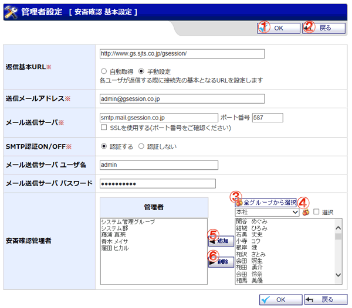

安否確認に関する基本設定を入力する画面です。

機能説明
OKボタン基本設定確認画面へ遷移します。入力内容に不備がある場合エラーメッセージが表示されます。 |
戻るボタン遷移元の画面へ遷移します。 |
|---|---|
グループコンボ選択したグループに所属するユーザがユーザリストに表示されます（既に管理者に追加されているユーザは表示されません）。 |
グループボタンポップアップでグループ選択画面が開きます。 |
ユーザ追加ボタンユーザリストで選択されているユーザを、管理者リストに追加します。 |
ユーザ削除ボタン管理者リストで選択されているユーザを、管理者リストから除外します。 |
表示・入力項目説明
返信基本URL
各ユーザが安否状況の回答を入力する際に接続するリンク先の基本となるURLを入力します（200文字以内）。
送信メールアドレス
安否確認の配信時に送信元となるメールアドレスを入力します（256文字以内）。
メール送信サーバ
安否確認の配信時に送信元となるメール送信サーバ名を入力します（100文字以内）。
メール送信サーバ ポート番号
メール送信サーバポート番号を入力します（5文字以内）。
SMTP認証ON/OFF
SMTP認証のON/OFFを設定します。
メール送信サーバ ユーザ名
メール送信サーバ ユーザ名を入力します（100文字以内）。
メール送信サーバ パスワード
メール送信サーバ パスワードを入力します（100文字以内）。
安否確認管理者
安否確認の管理者として設定するユーザを、ユーザリストから選択し追加します。